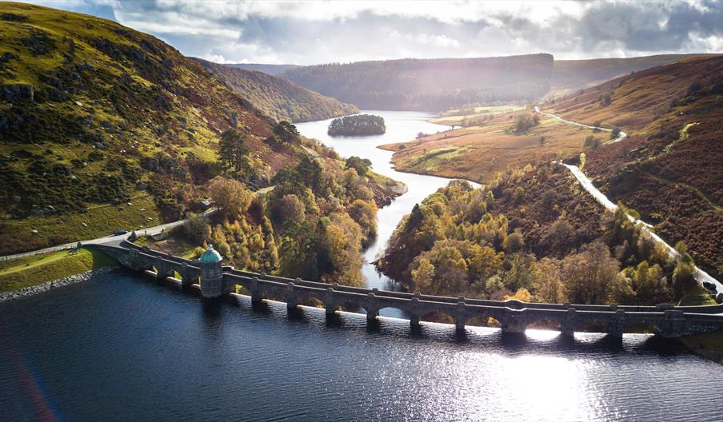
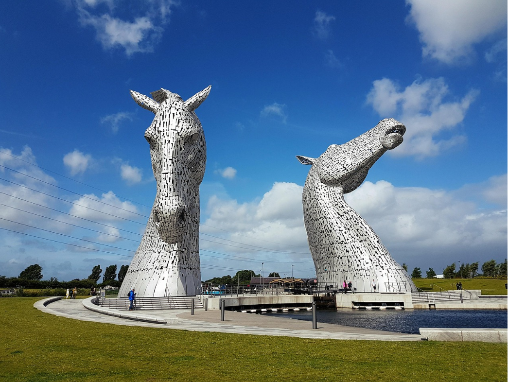
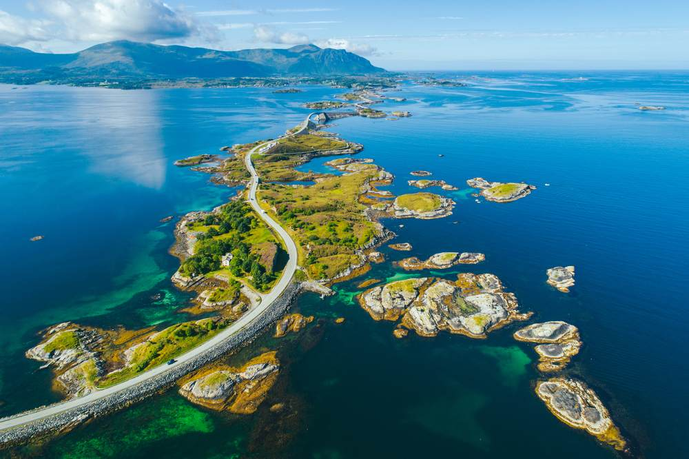
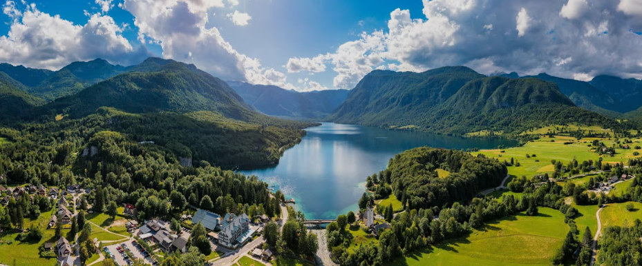
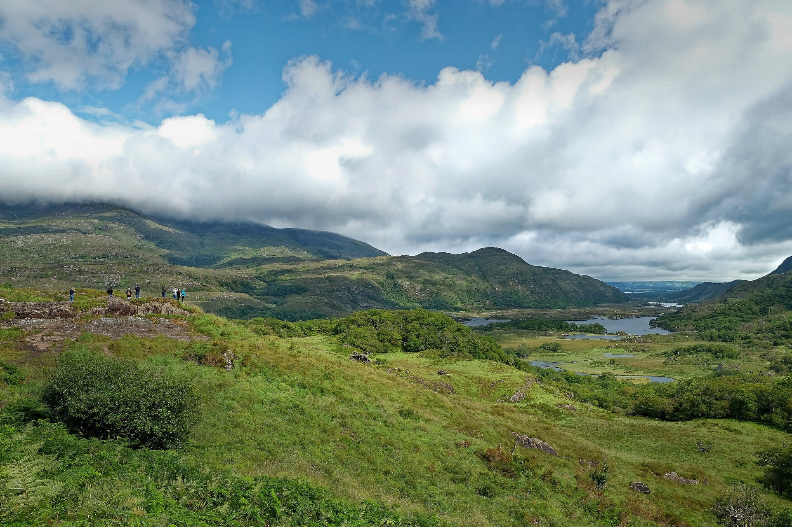

Tours
Here you will find a list of our upcoming tours
Select an item for more information

Wales - South to North Coast
A scenic tour starting on the South Wales coast, passing the Brecon Beacons and Elan Valley, through the heart of Wales and Snowdonia to finish in Conwy.

Scottish Lowlands
A scenic ride through the Scottish Lowlands including the Forth Bridge, Stirling Castle, the Trossachs, Loch Lomond, Falkirk Wheel and the Kelpies.

Norway - Atlantic Coast
Cycle along the stunning Norwegian coast from Bergen to Trondheim, crossing fjords and island chains.

Slovenia
Cycling on a diverse route from the capital, through the picturesque Julian Alps and the Soča Valley.

Southern Ireland
Cycle through the stunning Irish countryside taking gravel paths and easy off-road sections